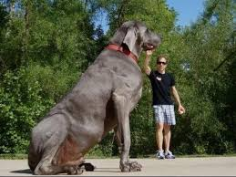

Perro Grande

. San Bernardo. La altura de San Bernardo está entre 69 y 89 cm y su peso entre 73 y 117 kg. Son perros gigantes, conocidos por haber realizado trabajos de rescate en los Alpes suizos.
Leer más. San Bernardo. La altura de San Bernardo está entre 69 y 89 cm y su peso entre 73 y 117 kg. Son perros gigantes, conocidos por haber realizado trabajos de rescate en los Alpes suizos.
Leer másUnas viven en agujeros en el suelo mientras otras se pueden encontrar debajo de piedras o troncos. Las que prefieren áreas oscuras y sombreadas pueden ocurrir en sótanos o bodegas. Estas especias pueden establecerse en la casa.
Leer más¡Qué Vida de Perros! Sinopsis: Torcido, un Perro Callejero, Llegará al Peor Lugar que Te Puedas Imaginar: la Perrera. . . Pero No Todo Está Perdido, Pues Allí Conocerá a Tres Amigos, con los que Compartirá la Mejor Aventura de Su Vida y Conocerá el Significado de la Amistad, el Coraje y la Valentía.
Leer más